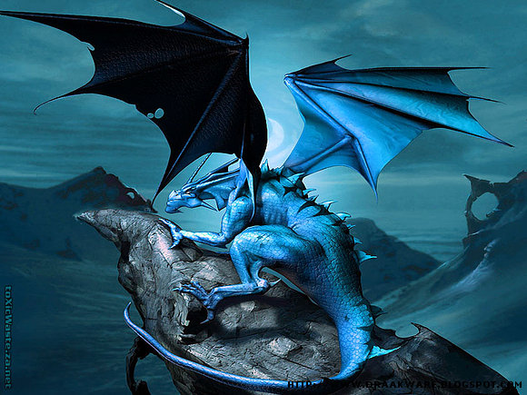
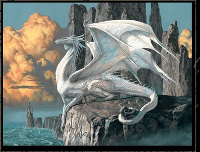
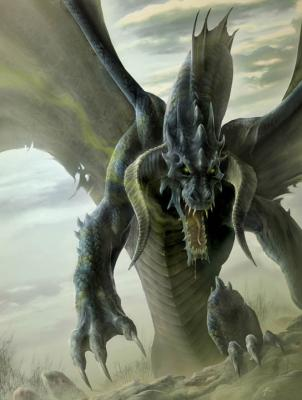
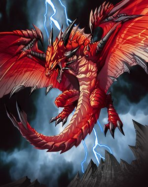
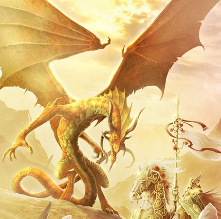
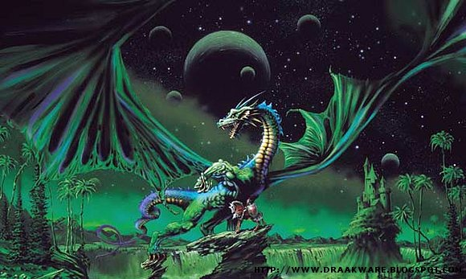
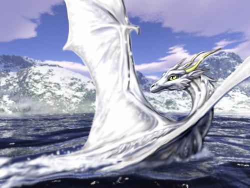
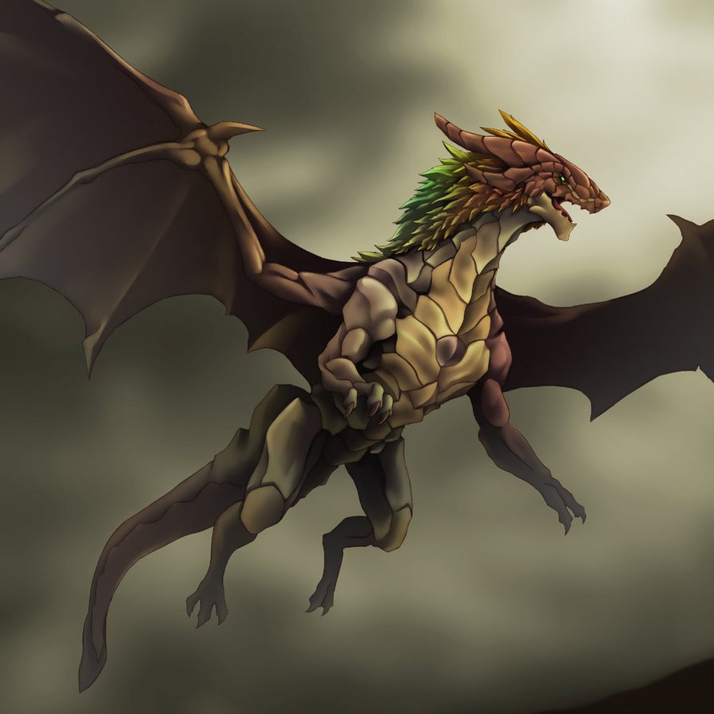
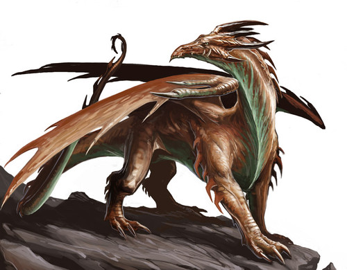
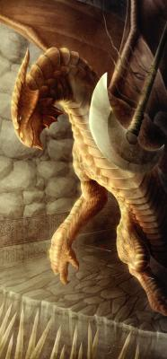

Dragones azules/Hielo
A los dragones azules también se les llamaba dragones de hielo, pues habitaban en zonas sumamente frías. Estos dragones eran pacíficos y tenían una piel muy gruesa, piel que los protegía de cualquier ataque de enemigo, incluso los dragones negros dudaban antes de tomar la iniciativa de atacar a uno de estos dragones

Dragones Plateados
Son los dragones que mas quieren y protejen a los humanos, pues se han mezclado mucho tiempo ya con ellos. Los más famosos reptiles de este color son Silvara, que vino bajo la identidad de una doncella elfa de la tribu de los Kalanesti, y su hermana Gwyneth, la mujer-dragón que cautivó el corazón del caballero Huma.

Dragones Negros
Normalmente, eran encontrados en pantanos, aunque había algunos que solían habitar guaridas edebajo del suelo. Despiadados por naturaleza, devastaban todo a su paso, pero sólo atacaban si con el ataque podían sacar algo para su beneficio. Usaban un ataque poderoso que cubría los cielos de obscuridad, momento en el que podían pasar inadvertidos y atacar

Dragones Rojos
Los dragones rojos solían vivir cerca de los volcanes o en lugares muy calurosos. Normalmente, los dragones rojos no atacaban si no eran provocados, pero cuando lo hacían eran realmente agresivos, aunque no llegaban a ser tan desalmados como los dragones negros. Las llamaradas que lanzaban, eran grandes, ya que podían doblar a su cuerpo.
DRAGONES ROJOS: estos Dragones se ubican dentro de los "Dragones Malignos"

Dragones Dorados
Se ubicaban dentro de los dragones benévolos. Estos reptiles eran poliformes, por lo que podían convertirse en cualquier especie, pero casi no la usan por que no creen necesario convertirse en una especie menor, pues ellos son dragones muy majestuosos

Dragones Verdes
Los dragones verdes, eran una raza extraña. Algunos dragones verdes eran muy pacíficos mientras que otros eran muy agresivos. Ellos habitaban en los bosques frondosos o en cuevas demasiado obscuras. No eran una raza fuerte, pero eran veloces e inteligentes. Atacaban cuando se sentían en peligroy cada uno de ellos portaba unas garras muy afiladas

Dragones Blancos
Pertenecen a la clasificación de "Dragones Malignos" y son los mas pequeños de las especies de dragón. Estos dragones se adaptaron a las zonas frías y prácticamente no viven en otro lugar. Lanzan cubos de hielo donde encierran a sus enemigos

Neodragón
Son muy poco comunes, extremadamente raros. Su aspecto varía, algunos cuentan con 4 patas delanteras y dos traseras, 4 ojos e incluso 6 paras de alas inmensas y fibrosas. No tienen escamas, su piel es lisa y sus alas están hechas de pluma y pelaje. No se puede decir mucho de estos dragones, ya que sus cambios en aspecto de unos a otros son tales, tanto en color, tamaño y cuerpo que lo más probable es que no existan dos parecidos, lo más mínimo. Sus pulmones están capacitados para volar a alturas innalcanzables sin problemas, sin temerle a la presión. Su apariencia es hermosa a la par de temible, y la gente prefiere evitarlos a toda costa. Su elemento base es Viento, y su debilidad depende del otro elemento que se les haya asignado

Dragones de cobre
viven en lugares rocosos.Aunque son benévolos, son unos dragones demasiado ambiciosos. Poseen dos tipos de bocanadas: la primera es un potente ácido y con la segunda pueden detener los movimientos del enemigo volviéndolos más lentos

Dragones de Latón
Viven en zonas arenosas. Son muy escandalosos y aparatosos y tienden mucho al egoísmo. Hablan hasta por los codos y viajan con los aventureros sólo por el hecho de escucharlos hablar. Sus bocanadas pueden provocar sueño, miedo o ambos y son dragones que dominan la magia
{kind=link}
{kind=link}
{kind=link}
{kind=link}
{kind=link}
{kind=link}
{kind=link}
{kind=link}